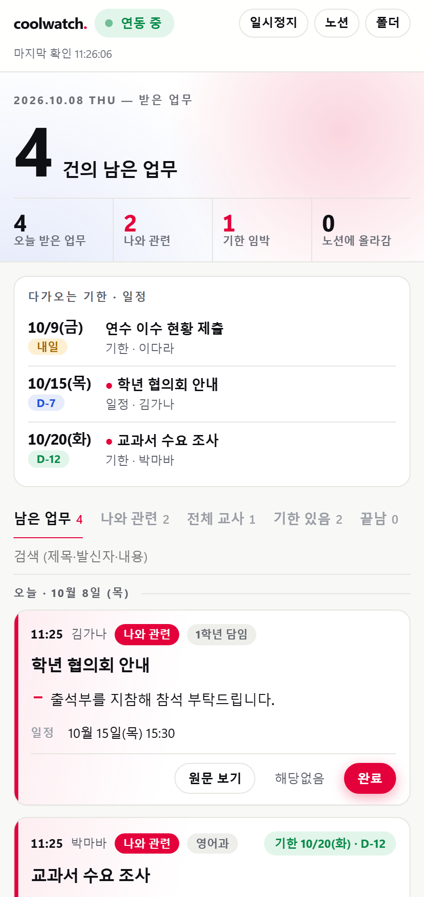

coolwatch
쿨메신저로 받은 업무 메시지에서 할 일·기한·일정을 뽑아, 화면 오른쪽의 작은 창에 카드로 보여 주는 학교 PC용 도구입니다. 팝업이나 소리는 없습니다.

받기 전에 읽어 주세요
- 쿨메신저의 기록을 읽기만 합니다. 쿨메신저를 바꾸거나 건드리지 않습니다.
- Claude 요약을 켜면 메시지 본문이 Anthropic(Claude)으로 전송됩니다. 처음에는 꺼져 있고, 켜지 않으면 PC 안에서만 정리합니다.
- 학생·학부모 내용이 든 글은 제외 단어(기본: 상담, 학부모, 생활기록, 성적, 결석)로 걸러 기록하지 않습니다. 학교 사정에 맞게 단어를 더 넣어 주세요.
- 한 대의 PC, 한 가지 쿨메신저 버전에서 만들어 쓰던 도구입니다. 다른 PC에서 이상하면 알려 주세요.
설치
관리자 권한이 필요 없고, PC에 파이썬이 없어도 됩니다. 1~3분 걸립니다.
- 압축 파일을 받아 풉니다.
- 폴더 안의
설치.bat을 더블클릭합니다. "Windows의 PC 보호" 창이 뜨면 추가 정보 → 실행을 누릅니다. - 화면 오른쪽에 창이 열리면 맨 위의 처음 설정을 순서대로 확인하고 설정 마치기를 누릅니다.
다음부터는 로그온하면 자동으로 켜집니다.
처음 설정에서 하는 일
| 쿨메신저 찾기 | 자동입니다. 못 찾으면 쿨메신저에 한 번 로그인하세요. |
|---|---|
| 제외 단어 | 기본 단어를 확인하고 필요한 단어를 더 넣습니다. |
| 내 역할 | 예: 1학년 담임, 영어과. 이 역할에게 온 글이 '나와 관련'으로 표시됩니다. |
| Claude 요약 (선택) | Claude 설치 → 로그인 → Claude 요약 켜기 버튼을 차례로 누릅니다. Pro·Max 구독 계정으로 로그인합니다. |
| 노션 연결 (선택) | 아래 '노션 연결'을 따라 합니다. 하지 않아도 화면만으로 쓸 수 있습니다. |
쓰는 법
| 아이콘 | 작업표시줄 오른쪽 아래의 동그란 아이콘입니다. 초록 = 연동 중, 회색 = 일시정지, 빨강 = 오류. 주황 점이 붙으면 아직 안 본 새 글이 있습니다. |
|---|---|
| 창 열기 | 아이콘을 누르면 화면 오른쪽에 작은 창이 열립니다. |
| 완료 · 해당없음 | 다 한 일은 완료, 나와 상관없는 글은 해당없음을 누르면 목록에서 빠집니다. 끝남 탭에서 되돌릴 수 있습니다. |
| 원문 보기 | 카드 안에서 원문이 펼쳐집니다. 전화번호는 가려서 보여 줍니다. |
| 자리를 비울 때 | 쿨메신저가 꺼져 있는 동안은 대기 중으로 바뀌고, 돌아오면 밀린 글을 이어서 정리합니다. |
| 화면 색 | 설정의 화면 색에서 강조색과 밝기를 고릅니다. |
Claude 요약
- 기본값은 Haiku + 노력 낮음입니다. 짧은 업무 글 정리에는 충분하고, Pro 요금제라면 그대로 두는 것을 권합니다.
- 설정의 정리 방식에서 모델과 노력 정도를 바꿀 수 있고, 오늘 쓴 건수와 토큰이 보입니다.
- 하루 200건을 넘거나 사용 한도에 걸리면 PC 안의 규칙으로 정리했다가, 나중에 Claude로 다시 정리합니다.
- 30자보다 짧은 글은 Claude를 부르지 않습니다.
노션 연결 (선택)
정리된 글을 내 노션 '받은 업무함'에도 올려 휴대폰에서 볼 수 있습니다. 화면에서 누른 완료·해당없음은 노션의 상태와 서로 맞춰집니다.
- 받은 업무함 템플릿을 열고 오른쪽 위 복제를 눌러 내 노션으로 가져갑니다.
- 노션 통합 페이지에서 새 통합(유형: 내부)을 만들고 시크릿을 복사합니다.
- 복제한 받은 업무함을 열고 오른쪽 위 ··· → 연결 → 방금 만든 통합을 추가합니다.
- coolwatch 설정의 노션 연결에 받은 업무함 주소와 시크릿을 차례로 붙여 넣고 저장합니다. "연결되었습니다"가 나오면 끝입니다.
문제 해결
아이콘이 빨강이고 "오류 — 멈춤"이라고 나옵니다
쿨메신저 쪽에 낯선 오류가 생겨 안전하게 멈춘 것입니다. 쿨메신저가 정상인지 본 뒤 화면의 오류 확인 · 다시 시작을 누르세요.
창이 안 열립니다
바탕화면의 coolwatch 받은 업무 바로가기를 누르세요. 그래도 안 되면
설치.bat을 다시 실행합니다.설치 중에 멈춥니다
학교 보안 프로그램이 내려받기를 막았을 수 있습니다. 인터넷 연결을 확인하고
설치.bat을 다시 실행해 보세요. 계속 막히면 PC에 파이썬(python.org)을 먼저 설치한 뒤 다시 실행합니다.카드 아래에 "규칙(오프라인) 정리"라고 적혀 있습니다
인터넷이 끊긴 동안 온 글이라 PC 안의 규칙으로 먼저 정리한 것입니다. 연결되면 Claude로 다시 정리합니다.
업데이트
새 압축 파일을 받아
설치.bat을 다시 실행합니다. 설정과 기록은 그대로 남습니다.제거
압축 폴더의
제거.bat을 실행합니다. 프로그램을 끄고 바로가기와 자동 실행을 지웁니다. 정리된 기록은 남겨 둡니다.고쳐 쓰고 싶은 분께
압축 파일 안에 소스가 모두 들어 있습니다. 폴더를 Claude Code로 열고 아래 문서부터 읽게 하세요.
HANDOFF.md | 지금까지 확인한 사실, 구조, 결정의 까닭, 남은 일 |
|---|---|
CLAUDE.md | 실제 메시지를 다룰 때의 안전 규칙 (Claude Code가 자동으로 읽음) |
| 시험 | python test_fake.py — 가짜 쿨메신저 DB로 전체 흐름을 시험합니다. |